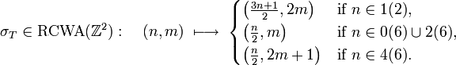

Stefan Kohl
| Scientific Interests in general | Algebra (in particular group theory) and number theory. Computational aspects of these topics. |
| Current subject of research | Infinite permutation groups acting on rings (residue-class-wise affine groups). |
I have found and investigated a countable simple group, which is built upon the arithmetical structure of the ring of integers:
Given a pair ( r_1(m_1), r_2(m_2) ) of disjoint residue classes of the integers, let the corresponding class transposition be the permutation of Z which interchanges r_1+km_1 and r_2+km_2 for each integer k and which fixes all other points. Then our group is generated by the set of all class transpositions.
This group - call it CT(Z) - has a rich class of subgroups -- it contains finitely generated groups which do not have finite presentations, and such for which the membership problem is algorithmically undecidable. Further it contains an uncountable family of simple groups, which is parametrized by the sets of odd primes.
Nevertheless, the group CT(Z) permits explicit computations. In fact, computational investigations played a crucial role in finding the mentioned and many more results.
Details and references can be found in the following article:
A Simple Group Generated by Involutions Interchanging Residue Classes of the Integers.
Mathematische Zeitschrift, DOI: 10.1007/s00209-009-0497-8.
So far, I have given invited talks on this subject in Bielefeld (Germany), Lausanne (Switzerland), Galway (Ireland), Brussels (Belgium) and Braunschweig (Germany).
The construction described above can be generalized to a much wider class of rings. In particular I am presently interested in the structure of the groups RCWA(Z^n) which are formed by all residue-class-wise affine permutations of Z^n, and in the structure of the groups CT(Z^n) < RCWA(Z^n) which are generated by the class transpositions of Z^n.
A permutation σ of Z^n is said to be residue-class-wise affine if there is a lattice L such that σ is affine on any residue class modulo L. A class transposition of Z^n interchanges two disjoint residue classes modulo two possibly distinct lattices. For example, given two disjoint residue classes r_1 + v_1 Z + v_2 Z and r_2 + w_1 Z + w_2 Z of Z^2, the corresponding class transposition interchanges r_1 + k_1 v_1 + k_2 v_2 and r_2 + k_1 w_1 + k_2 w_2 for any integers k_1 and k_2.
It looks likely that many of the results on RCWA(Z) and CT(Z) can be proved in very similar ways for RCWA(Z^n) and CT(Z^n) as well. A particular incentive for looking at RCWA(Z^2) is the following:
The famous 3n+1 conjecture asserts that iterated application of the Collatz mapping T: n -> (n/2 if n is even, (3n+1)/2 if n is odd) to any positive integer yields 1 after a finite number of steps. The mapping T itself is not injective, but dealing with bijective mappings of that type is usually much easier. The following permutation of Z^2 acts on the first coordinate just like T:

Now, the 3n+1 conjecture is equivalent to the assertion that the line n=4 is a set of representatives for the cycles of this permutation on the half-plane n>0. However, nice results and the ways to obtain them can usually not be predicted, and therefore I stop my description here.
| Back to main page | Last modified: 19-Sep-2009 |